Токио · Окутама · крафтовое пиво
VERTERE в Окутаме: крафтовое пиво в старом доме над горной рекой
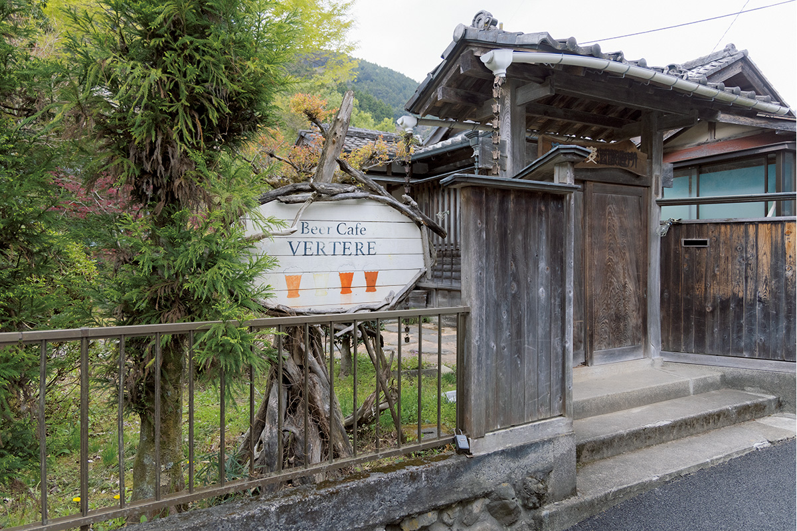
Окутама лежит на западной окраине Токио, среди гор и леса, в полутора часах на поезде от Синдзюку. Прямо у станции, в доме, которому около 70 лет, работает пивоварня VERTERE, и пиво здесь пьют на террасе над горной рекой.
Дорога
Полтора часа от Синдзюку
От станции Синдзюку до Окутамы около полутора часов на поездах линии JR с пересадками в Татикаве и Омэ. На выходе из вагона не верится, что это всё ещё Токио: воздух прохладный и чистый, вокруг склоны в хвойном лесу, внизу шумит прозрачная река Ниппара, с берега слышны голоса семей, которые жарят мясо у воды.
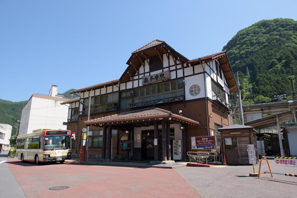
Вокруг Окутамы много мест, которые трудно представить в столице: сталактитовая пещера Ниппара, ущелье Хатоносу, тропы для походов и маршруты для велосипедистов. Многие гости заходят в VERTERE как раз на обратном пути с гор.
Сама пивоварня в 30 секундах от станции. Нужно свернуть в переулок напротив вокзала, и через пару домов справа появится маленькая вывеска. Пиво VERTERE стало для Окутамы новой местной маркой: лицензия на производство алкоголя появилась в этих местах впервые за сто лет.
Дом
Ремонт своими руками
VERTERE открыли в 2015 году два друга, Хикари Судзуки и пивовар Кокагэ Цудзино. В 2017 году обоим было по 28 лет. Вместе они учились в старшей школе в центре Токио, потом поступили на отделение ландшафтной архитектуры Токийского сельскохозяйственного университета и уже тогда собирались открыть своё дело.
«Судзуки всегда говорил, что хочет заниматься бизнесом. Мы с ним разные, но сошлись характерами. После учёбы он пошёл копить деньги, а я пошёл учиться ремеслу, которое станет нашим оружием»
Кокагэ Цудзино
Цудзино подрабатывал в баре при пивоварне и так увлёкся пивом, что три года учился варить его в пивоварне в районе Коэндзи. Помещение друзья сначала искали в центре Токио, а выбрали Окутаму, с которой их ничего не связывало. Причину пивовар объясняет просто: «Когда я выпил здесь пива, мне было до невозможности хорошо». Судзуки вспоминает то же самое: в первый приезд в Окутаму его поразило, каким вкусным оказалось обычное баночное пиво, и он подумал, что своё пиво здесь было бы ещё лучше.
Дом, которому около 70 лет, они сняли у человека, который занимался икебаной и искусством надевать кимоно. Он был в плохом состоянии, и около восьми месяцев друзья ремонтировали его сами: заделывали дыры и полностью перестелили полы.
«Дом был совсем разваленный, мы как одержимые латали дыры»
Кокагэ Цудзино
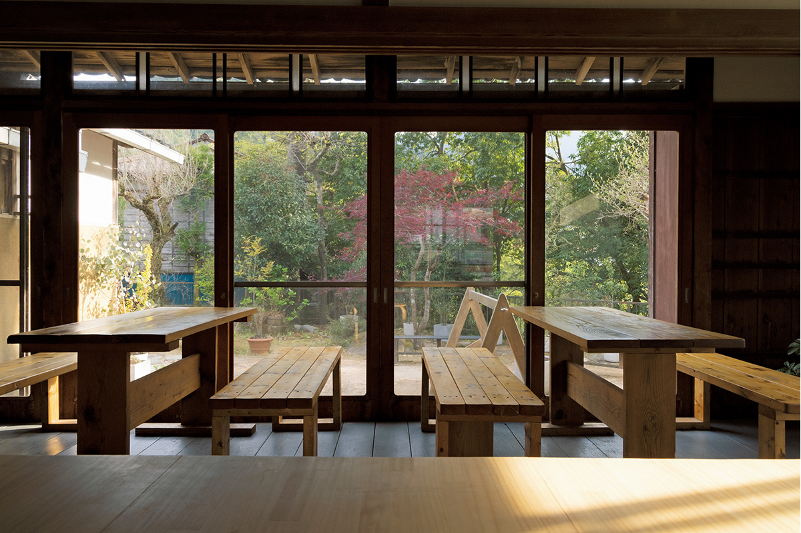
Внутри пахнет криптомерией. Стойку и пол сделали из местной криптомерии: в округе её оказалось с избытком, и им предложили забрать лишнее дерево. Участок занимает около 300 квадратных метров, и в 2017 году варочный цех стоял прямо за стойкой, в сарае площадью около семи квадратных метров. В саду есть стойка для велосипедов, а дорожки и кусты друзья тоже устроили сами, чтобы по саду можно было пройти кругом.
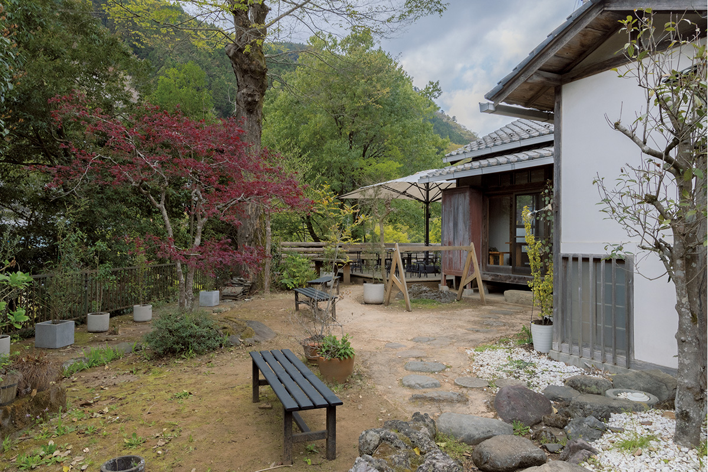
Терраса
Пиво над рекой
Главное место в VERTERE это терраса. С неё видны поросшие лесом горы, а прямо под ней течёт река Ниппара. Пиво мягкое, с цитрусовым ароматом и очень освежающее. В солнечный день после похода или велосипедной прогулки его пьют под шум воды и пение птиц.
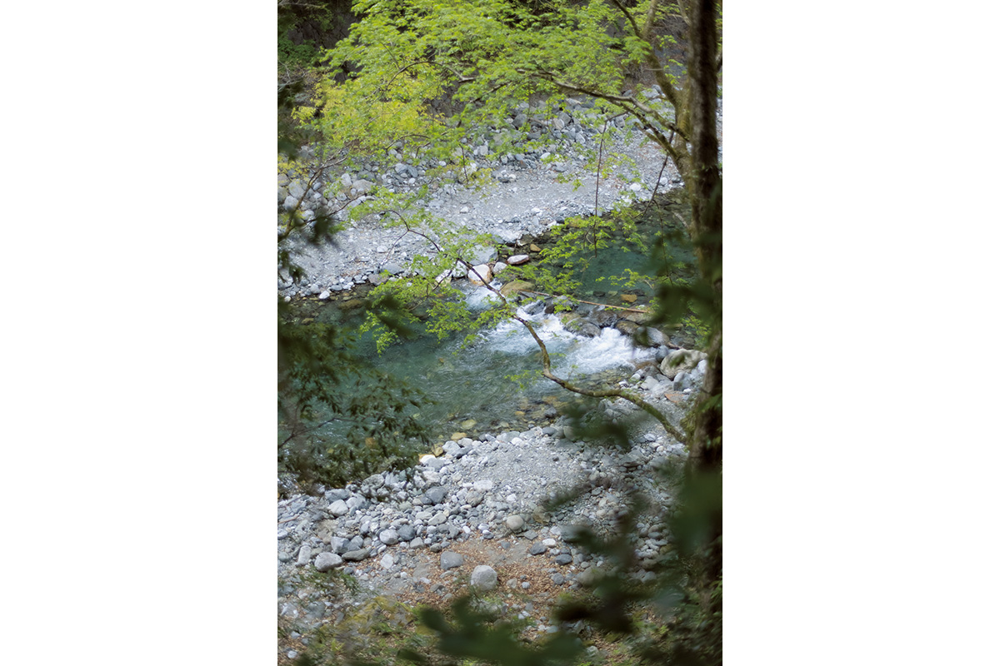
«Лучшее время до и после майских праздников, когда листва понемногу становится ярче. Пиво под пение птиц это лучшее, что может быть»
Кокагэ Цудзино
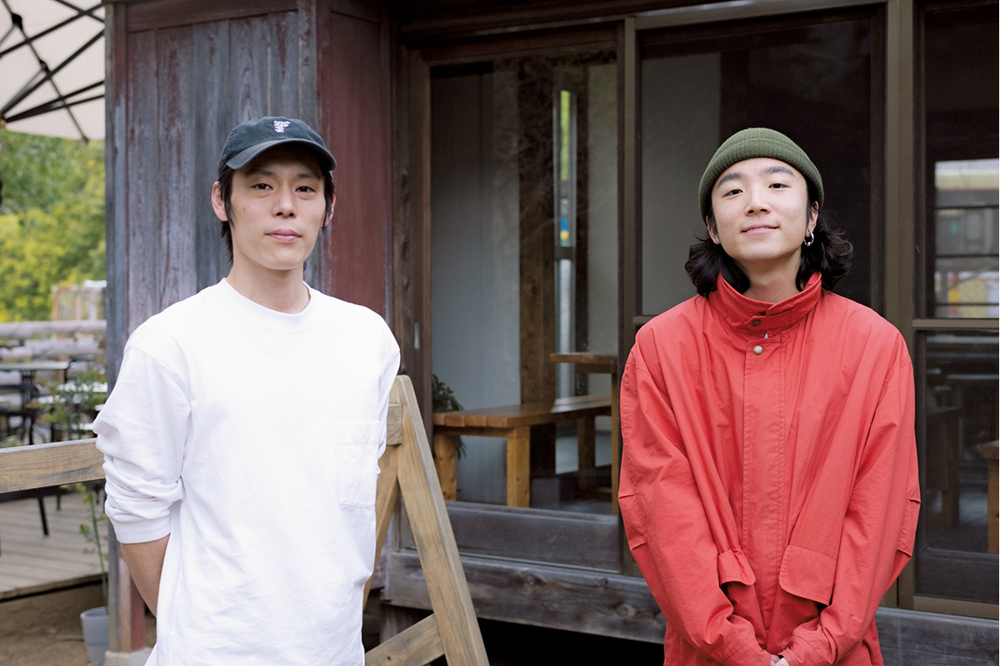
Пиво
Рецепт, который не стоит на месте
Друзья решили, что VERTERE будет создавать запоминающиеся минуты с пивом: каждый раз думать о том, с кем, где и как его будут пить. Название взяли из латыни. От глагола «vertere», «поворачивать», «изменять», произошли, например, английские слова со значением «превращать».
Начинали с кастрюли на 160 литров и железной бочки, и первое время всё шло с трудом. В американском Портленде выбор сырья несравнимо шире, а в Японии найти сырьё того же уровня было сложно. Информации тоже было мало, поэтому Цудзино читал научные статьи и бесконечно пробовал и ошибался.
Солод VERTERE берёт в основном из Великобритании, Германии и Северной Америки: простой, вкусный сам по себе и удобный в работе. Хмель выбирают без ограничений по странам, из США, Новой Зеландии или Европы, в зависимости от аромата, вкуса и стиля пива. Дрожжей около десяти видов, чаще всего английские лондонские и американские вермонтские эль-дрожжи. Пивовар выбирает те, что дают яркий аромат и подчёркивают фруктовые ноты хмеля и солода. К ним добавляют чистую мягкую воду Окутамы. Пиво не фильтруют и не пастеризуют, чтобы дрожжи раскрылись полностью, и в 2021 году варили три партии в неделю.
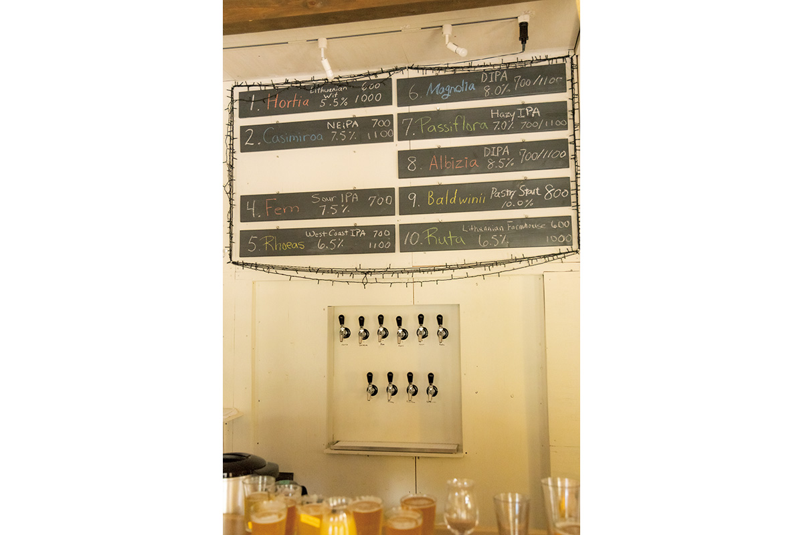
«Пиво хорошо тем, что свободны и те, кто его варит, и те, кто его пьёт. Поэтому мы не говорим: вот наш вкус. Даже пиво с тем же названием мы варим по разным рецептам, меняем сырьё по сезону, вся команда обсуждает и обновляет его. Интереснее всего число возможных сочетаний: хмель и солод, сколько дрожжей, при какой температуре бродить. Чуть поменяешь температуру брожения, и пиво совсем другое. Открытия каждый день, и я до сих пор учусь»
Кокагэ Цудзино
Брожение пивовар считает самой интересной частью работы. Человек, по его словам, может сделать здесь немного: всё как следует вымыть и создать условия, в которых микробам хорошо работать.
Хмель
Свой хмель из горной деревни
В Окутаме весь год прохладно, и следить за температурой бродильных чанов непросто. Зато здешняя земля дала пивоварне хмель. Около 2016 года пивоварня начала выращивать его сама, и в 2017 году шишки к концу августа вырастали почти до размера клубники. Пиво из своего хмеля тогда выпускали небольшими партиями.
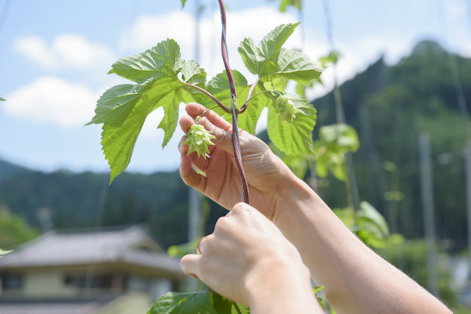
В 2017 году пивоварня вместе с молодёжной группой Ogouchi Banban Campany (OBC), которая оживляет пустеющие деревни района Огоути, посадила хмель в деревне Минэ у границы с префектурой Яманаси. Урожай был небольшим, но его хватило на совместное пиво с OBC.
«Пиво только из местного сырья это тоже интересно. Место у нас глухое, возможности ограничены, но можно, например, брать продукты, которые выращивают знакомые. Хочется дальше делать местные проекты, которые держатся на людях»
Кокагэ Цудзино
Что пить
Сорта VERTERE
В 2017 году на кранах было до десяти сортов: пять постоянных (голден-эль, пэйл-эль, вайцен и другие), два сезонных и два-три гостевых сорта других пивоварен. К пиву подавали, например, курицу во фритюре в маринаде из собственного пива и куриную ветчину с соевым соусом и васаби из Окутамы.
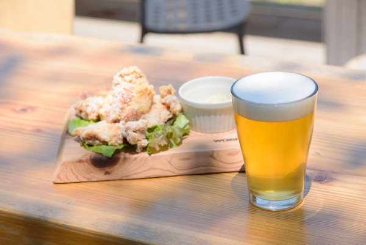
В 2021 году сорта называли латинскими именами растений. Casimiroa, одно из самых популярных, это нью-ингленд IPA с молочным сахаром: гладкое, сладковатое, со сложным фруктовым вкусом от четырёх сортов хмеля, 7,5 %. Scilla на норвежских дрожжах похоже на лагер, хотя это эль, и пахнет мёдом, 5 %. Rhoeas это олдскульный вест-кост IPA с ясной горечью и цитрусовым ароматом, 6,5 %. Magnolia, ещё один популярный сорт, это двойной IPA с ароматом апельсина и вкусом ананаса, 8 %. Passiflora это мутный IPA с тропическими фруктами и мягкой сладостью, 7 %. Albizia на карамельном солоде даёт плотную горечь с травяными, древесными, пряными и фруктовыми нотами, 8,5 %. Было и пиво для финала вечера: десертный стаут с кофе, какао, ванилью и молочным сахаром, 10 %. Бокал 266 мл стоил 600–800 иен в 2021 году. Набор сортов всё время меняется.
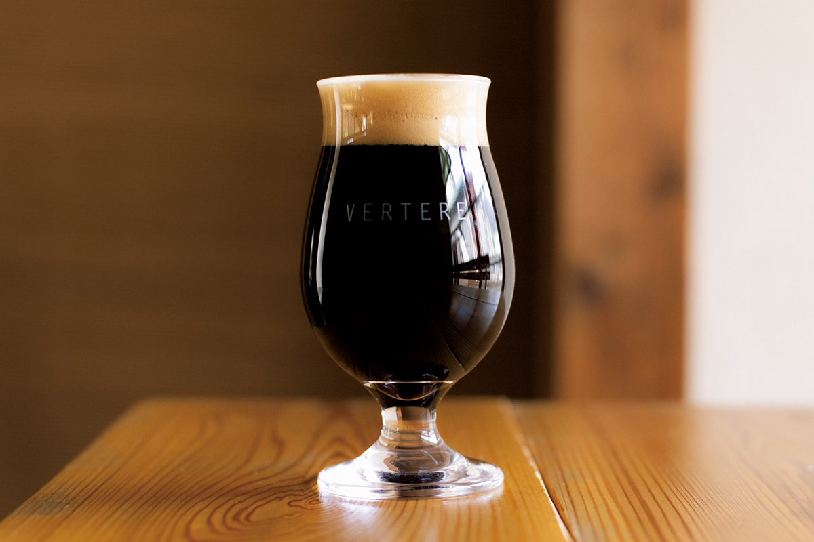
Пиво VERTERE продают и в банках с яркой графикой. А чтобы брать пиво с собой было проще, пивоварня открыла лавку разливного пива навынос прямо перед станцией. Многие постоянные гости заходят туда перед восхождением.
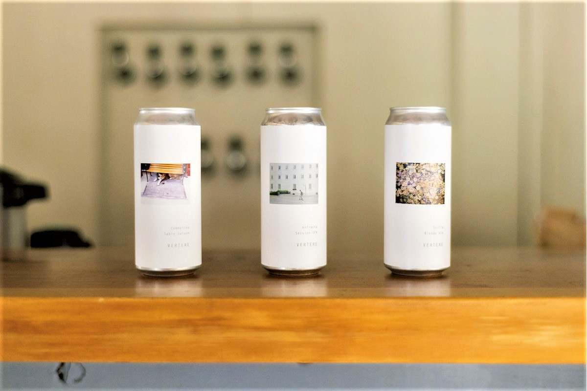
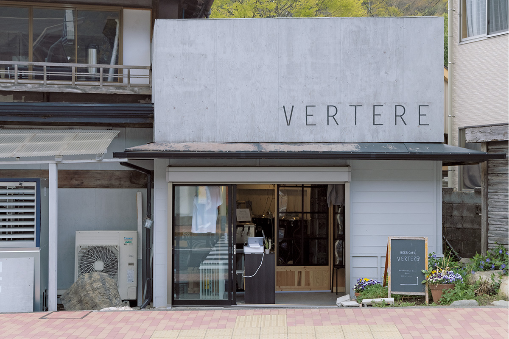
В 2024 году пивоварня переехала в новый цех в Окутаме, а старый дом у станции стал её главным пивным залом. Если в солнечный выходной день спуститься к нему с гор, здесь можно попробовать пиво, которое бывает только в этот сезон.
VERTERE Okutama Taproom (Beer Cafe VERTERE)
- Адрес
- Токио, Окутама, Хикава, 212
- Телефон
- +81 428-85-8590
- Часы работы
- 11:00–19:00 (последний заказ), лавка навынос 13:00–18:00
- Выходные
- с понедельника по пятницу
- Как добраться
- от станции Синдзюку на поездах JR с пересадками в Татикаве и Омэ до станции Окутама около 1 часа 25 минут, от станции меньше минуты пешком
- Сайт
- verterebrew.com
Фото: Коки Мацунага, Кохэй Омати.